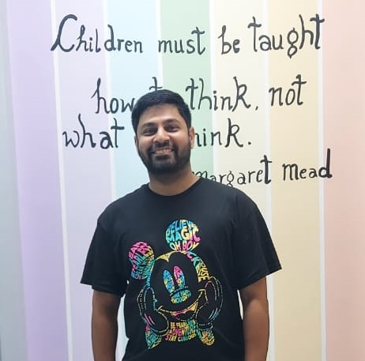

Our Faculty
Meet our dedicated team of highly qualified and experienced educators

Nitin Saxena
Biology and Primary & Secondary Grades Faculty
I did my Ph.D. in Ecology and Evolution at the Centre for Ecological Sciences in Indian Institute of Science, Bengaluru. I did B.Tech in Biotechnology from Jaipur National University, Rajasthan. Academic research, teaching, and counselling are my major passions.
I have home tutored, offered classes through my place, taught in school, taught in a coaching institute, and offered crash courses for NEET preparation in PU colleges. Also offered academic and career counselling to more than 50 students and their parents as well.

SNEH SHARMA
Physics
Sneh is an educator with over 6 years of teaching undergrad and post graduation experience in a reputed college and over 15 years in home tuitions. She takes teaching not as a job but as her passion , and aims to serve as an inspiration for students to reach their goals. She hold a post graduate degree in physics with a medal of excellence.
MADHU PARIHAR
Biology and Chemistry
Madhu has done her MSC in biotechnology from Lachoo memorial college of science and technology, Jodhpur . She has taught in Bhat's coaching classes and Narayana PU college as biology faculty. She has also taught in Mount litera Zee school as a primary teacher. She has been in teaching profession from last 10 years.
Shray Chaturvedi
Math and Physics
Shray has a BSc(H) degree in Mathematics from the University of Delhi and an MSc degree in Applied Mathematics from South Asian University, New Delhi. He was a long-term visiting student at the prestigious ICTS-TIFR centre in Bengaluru. He has worked as a Mathematics expert for various International Edtech firms and publication platforms. In addition, he has worked as an educator and artist with organizations like the British Council, UNESCO, Indian Academy of Sciences, Katha etc.
He is interested in both research and teaching of basic and advanced mathematical techniques and their applications in Physics and Life sciences.
Being formally trained in mathematics, he understands the importance of rigour and formalism; being an artist, he has a sense of creativity and the flexibility to constantly evolve. As a teacher, he has an understanding attitude and empathy, and the millennial in him never gives up and makes him confident and ambitious.
KULESHWAR SAHU
Quantitative Aptitude
Kuleshwar is an Aptitude trainer. He has done his Bachelor of Engineering in mechanical discipline. Right after his graduation he entered into the education field and it has been 5 years since then. In these past 5 years he has trained more than 50,000 undergraduate and post-graduate students in 35+ colleges (namely VIT Vellore, GITAM University, PSG College of Technology, SRM group of institutes, etc.)
Learn from the Best
Join our coaching classes and get guided by experienced educators dedicated to your success
Enroll Today